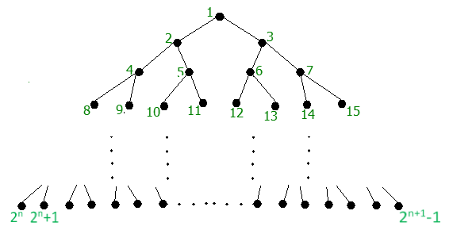

In this exercise, I used a simplized SEGMENT TREE to illustrate the data in my programme.

If we call a node is number a, the number present for child node of it will be 2*a and 2*a+1. So all our array will be presented in the leafnode, meaning from 2^x to 2^(x+1)-1 depend on the size of the base array.
After that, I used a recusive function that can calculate from bottom up.
#include< bits/stdc++.h>
using namespace std;
#define min(a,b) a< b?a:b
#define max(a,b) a> b?a:b
#define fi first
#define se second
#define For(i,a,b) for(int i=a;i<= b;++i)
#define Ford(i,a,b) for(int i=a;i>= b;--i)
#define forw(i,a,b) for(int i=a;i< b;++i)
#define forwd(i,a,b) for(int i=a;i> b;--i)
struct node{
int _max, _maxleft;
};
int n;
node *p;
void init(int _size){
p = (node*)malloc(_size*sizeof(node));
}
node calculate(int _size,int pos){
if(pos>=_size) return p[pos];
node left = calculate(_size,2*pos);
node right = calculate(_size,2*pos+1);
p[pos]._max = max(left._max , right._max);
p[pos]._maxleft = left._max;
return p[pos];
}
void NLR(int pos,int _size){
cout<< p[pos]._maxleft<<' ';
if(pos>=_size)return;
NLR(2*pos,_size);
NLR(2*pos+1,_size);
}
void LNR(int pos,int _size){
if(pos>=_size){
cout<< p[pos]._maxleft<<' ';
return;
}
LNR(2*pos,_size);
cout<< p[pos]._maxleft<<' ';
LNR(2*pos+1,_size);
}
void LRN(int pos,int _size){
if(pos>=_size){
cout<< p[pos]._maxleft<<' ';
return;
}
LRN(2*pos,_size);
LRN(2*pos+1,_size);
cout<< p[pos]._maxleft<<' ';
}
int main(){
cout<<"Enter the quantity of element in array: ";
cin>>n;
int _size = (1<< int(ceil(log2(n)))),x;// _size is the size of array have 2^x elements
init(2*_size); // we need to creat a array have 2^(x+1) elements.
forw(i,_size,_size+n){ // insert number in to leafnode
cout<<"Enter the element number"<< i-_size+1<<": ";
cin>>x;
p[i]._max = p[i]._maxleft = x;
}
forw(i,_size+n,2*_size){ // insert the max in the rest leafnode
p[i]=p[_size+n-1];
}
calculate(_size,1);
cout<<"The NLR order:";
NLR(1,_size);
cout<<"\nThe LNR order:";
LNR(1,_size);
cout<<"\nThe LRN order:";
LRN(1,_size);
free(p);
return 0;
}